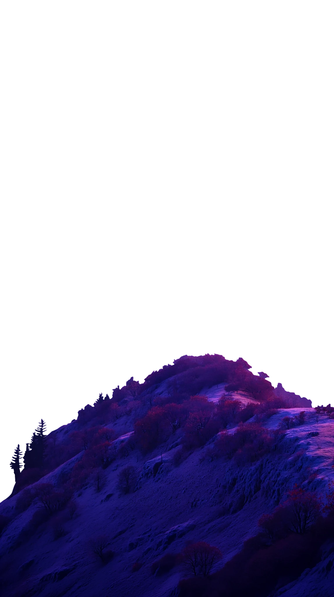
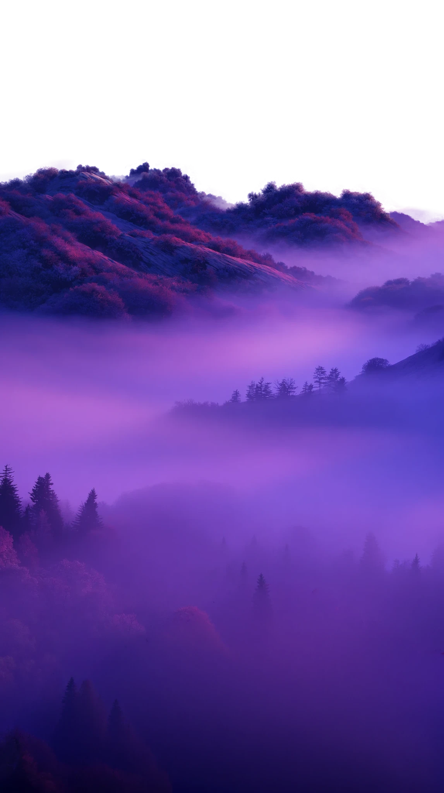
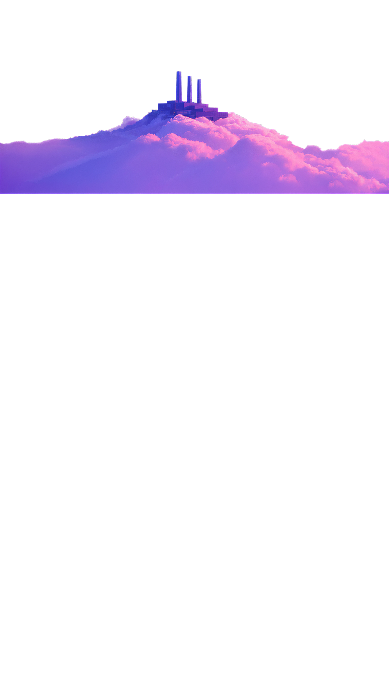
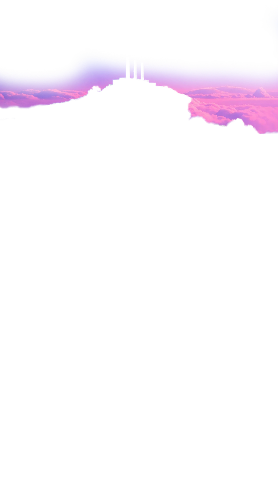

Project 022 — layers
Layers in Motion
Depth, rhythm and space built from four stacked images, animated by ScrollSmoother.
Result
Four layers, one story
Each image travels at its own speed. The front leads the motion, the background drifts — and that difference is what creates the illusion of depth.
- 04 layers
- 3D depth
- 1.6× front / back